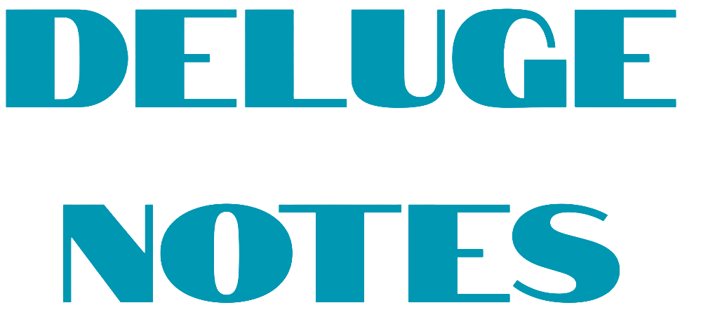
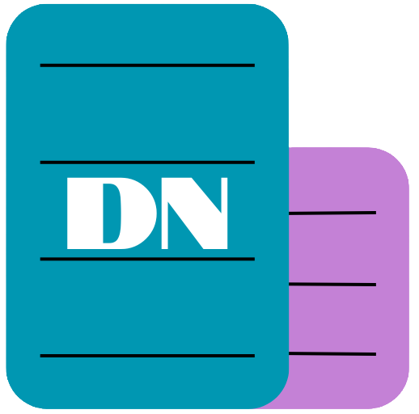
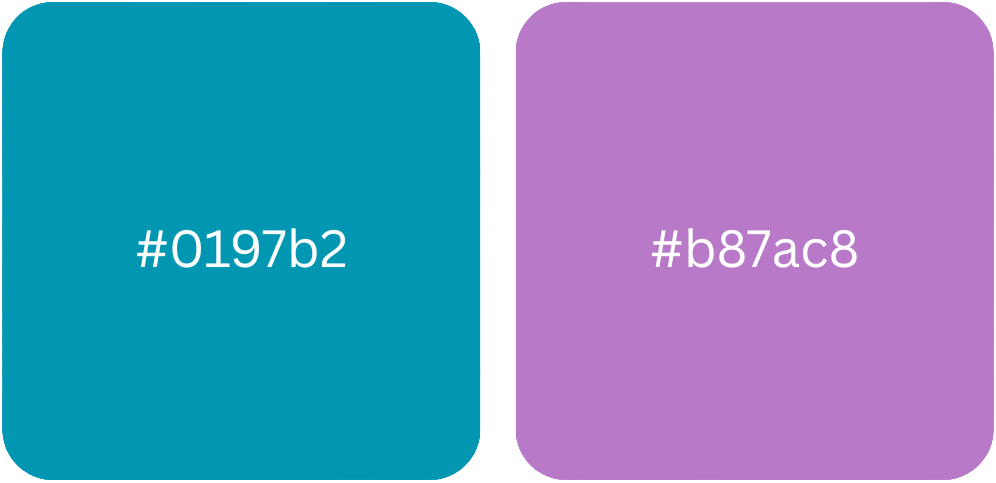

Über uns:
Deluge Notes ist eine innovative Notiz- und Produktivitäts-App, die von einem engagierten Team in Wien entwickelt wird. Unsere Mission ist es, Menschen dabei zu helfen, ihre kreativen Ideen zu organisieren und ihre Produktivität zu steigern, sei es im Studium, im Beruf oder im Alltag.
Markenübersicht:

Wortmarke
Die Wortmarke „Deluge Notes“ ist inspiriert vom englischen Begriff „deluge,“ wörtlich Überflutung. Mit Deluge Notes können sie selbst eine Flut an kreativen Ideen perfekt strukturieren. Diese Wortmarke wird konsistent auf der Website, im Webshop sowie in allen Marketingmaterialien verwendet.

Bildmarke
Die Bildmarke zeigt zwei leicht versetzt übereinandergelegte Sticky Notes mit den Initialen „DN“ in der Mitte. Sie steht für die Verbindung verschiedener Tools zu einem produktiven Gesamtwerk. Diese Bildmarke wird konsistent auf der Website, im Webshop sowie in allen Marketingmaterialien verwendet.

Farbmarken
Deluge-Blau (#0097b2) und Deluge-Lila (#8a4fd0) sind rechtlich geschützte Bestandteile des Corporate Designs und sichern den Wiedererkennungswert über alle digitalen Kanäle.
Rechtliche Angaben
Klassifikation (Nizza-Klassen)
Die Marken von Deluge Notes sind in den folgenden Nizza-Klassifikationen eingestuft:
Klasse 9: Herunterladbare Software für das
Notizmanagement und die Produktivität.
Klasse 41: Bereitstellung von digitalen
Werkzeugen und Lehrmaterialien für akademische und schulische
Zwecke.
Klasse 42: Software-as-a-Service (SaaS) und
Cloud-Computing-Dienste für Produktivitäts- und
Kollaborationszwecke.